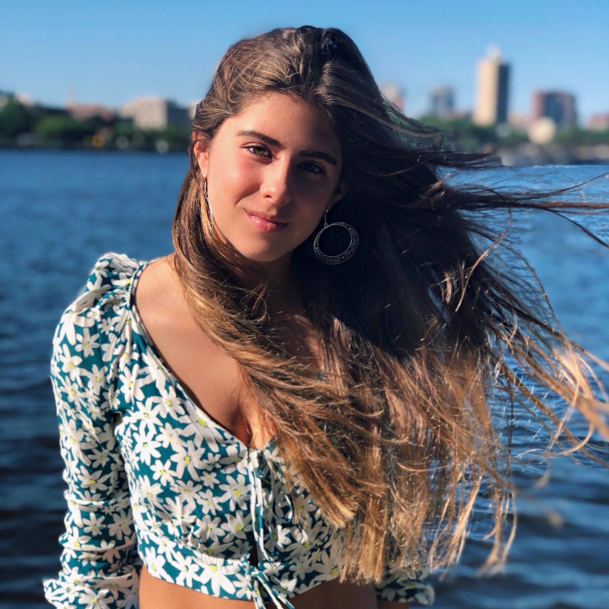

Miranda Urdinola's Resume
I was born in Bogota, Colombia on October 7 of 2000. My father is an economist and my mother is a lawyer. I have a 16 year old sister named Alexia who studies at Colegio Nueva Granada. My friends know me for my good sense of humor and great
cooking skills.

Education
University of Miami
Bachelor of Art in Media Management and Public Relations
Colegio Nueva Granada (High School)
GPA 3.6
Honors: Commended Honor Roll and Model United Nations Excellence Award
Work & Community Service Experience
Boston University Communications Summer Program
- Participated in a two week summer program taking seminars on journalism and mass communication.
Internship at Wells Fargo
- Did a no pay internship at Wells Fargo in Miami learning about the different jobs at the bank, how stocks work, assisting employees by delivering messages and papers to other people inside the bank.
Trinity School
- Teach English to low income children and participate in stimulating activities with them.
Fundacion Carvajal
- Organize and check in and out the books at the library of the foundation and assist the guides during the different educational and recreational activities for the people of the neighborhood.
Fundacion La Madre y el Niño
- Do educational and recreational activities with little kids for adoption.
Skills, Activities & Interests
Languages
Fluent in English and Spanish
Model United Nations
- Competed in Colegio Colombo Britanico Model in Cali (World Bank Comission)
- Press in The English School MUN Model
- Logistics Team in Colegio Nueva Granada MUN Model
Communicate (School Magazine)
- Participate in CNG’s school magazine and wrote monthly articles on different topics the committee assigned.
Human Utopia Club
- Influencer group that gives talks and did activities with smaller grades about different topics such as bullying, slut-shaming, exclusion, alcohol, peer pressure and other difficult situations many kids in school have experienced or how
to
prevent them.
School Fashion Show
- Participated in CNG’s fashion show as a model.
Swimming
- Member of my club’s swimming team.
Driven Youth Generating Hope
- Raising funds and being part of the construction process for the building of parks for low-income neighborhoods in Bogota.